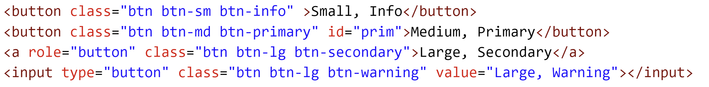

What is a CSS framework? It is essentially a bunch of pre-built CSS that you can use without re-inventing the wheel. Following the framework's guidelines, you'll need to add HTML elements and class names to build the website rather than actually having to build out all the CSS.
Bootstrap is all about using Bootstrap classes, with HTML elements.

Bootstrap incorporates many classes that professionalize and standardize a UI.
Using Bootstrap Containers
A container is a wrapper <div> element that stores other elements. The Bootstrap container class is fundamental to the layout - it supports a set of numeric, pixel-value breakpoints in responsive design. These breakpoints are super-important and you will see them used in relation to other classes in Bootstrap, here they are:
Using Rows & Columns Effectively
In Bootstrap, a container can contain one or more rows (class of row). These elements of class row are themselves containers for columns (elements of class col). The default behaviour here mirrors the underlying code base of CSS flex.
The columns grid is based on a series of 12 parts, or units spaced horizontally along a row.
The col-xxx class spans all of, or parts of, the 12 parts in a horizontal stretch, each column occupies 0 parts, 1 part, 2 parts..... 12 parts. The sum of all of the parts occupied by all of the columns in a row cannot be more than 12. How much space each column takes up is determined by (you guessed it) a class.
Using Cards
Cards can be created with HTML elements styled as a rectangular area, designed to represent information. Cards keep content clear and distinct on a web page. Bootstrap has a Card class, with specific associated classes representing a part of the the card content, like title and sub-title, image area. Here is the layout.
Using Buttons
Bootstrap classes support buttons as input elements, a tags and buttons. With Bootstrap, the button style is enhanced by using additional Bootstrap classes applied to the regular HTML elements. Note, btn is the base button class, btn-sm, btn-lg is the size, btn-primary, btn-secondary, gives the colour.

This renders ...

Buttons can be grouped as check boxes (multiple selections possible) ...

or as radio buttons (mutually exclusive).
This radio button code renders...:
Using Bootstrap Navigation Support
Navigation is an important part of a page, or set of pages. Bootstrap offers a layered approach to navigation controls, starting with a basic set of techniques that are assistive technology friendly and recognized as standard. Always follow the documentation, this best supports any changes to Bootstrap and it's impact on assistive technology. To summarize the 3 strategies,
- use a list with list items and a tags -
- use a div with a tags -
- use a nav tag, with a tags -
A hamburger menu can be incorporated (anywhere) by making selective use of hide or collapse.
Bootstrap Controls
Bootstrap includes classes that support multiple UI features, like accordions, tooltips, popovers
Make sure to use the Bootstrap documentation as you implement other Bootstrap classes in your UI.